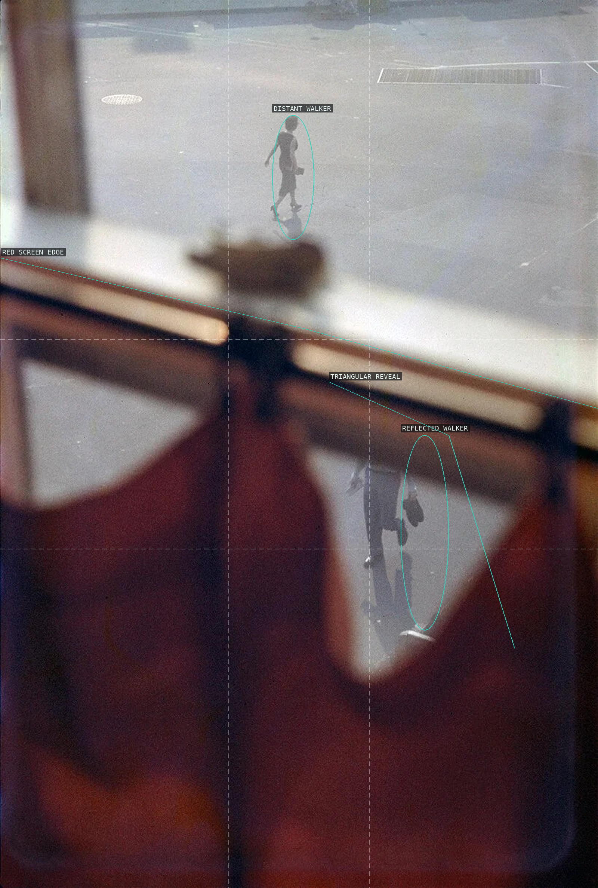
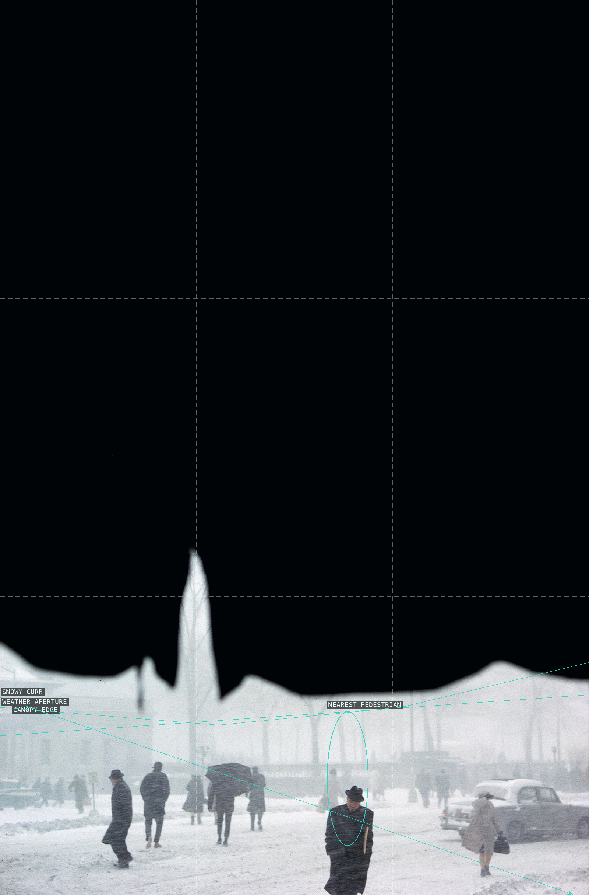
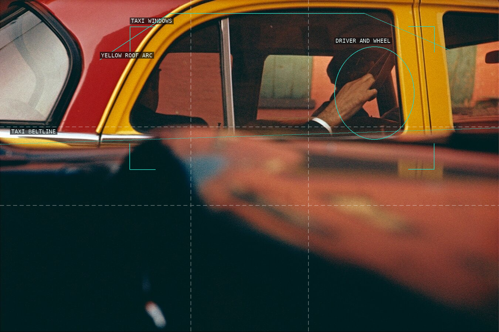
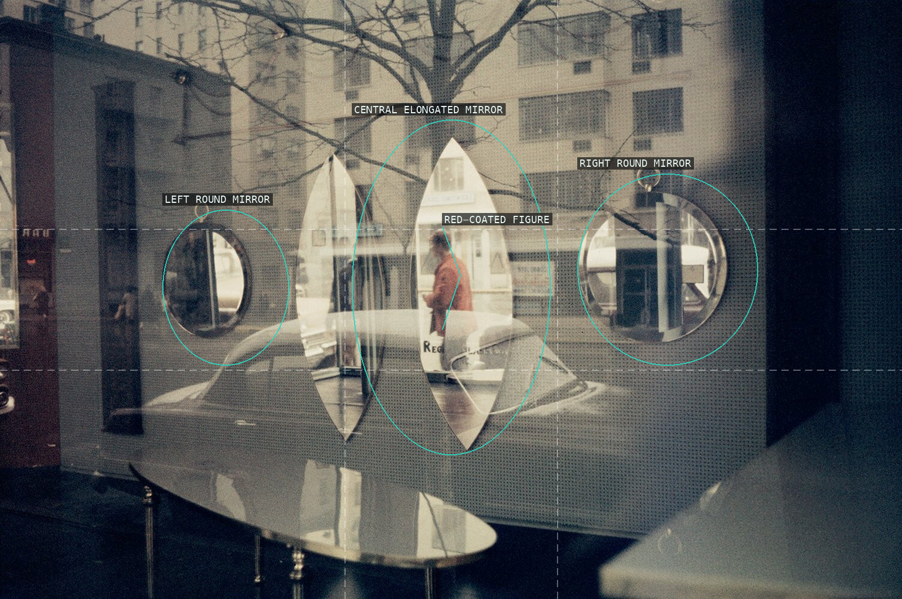
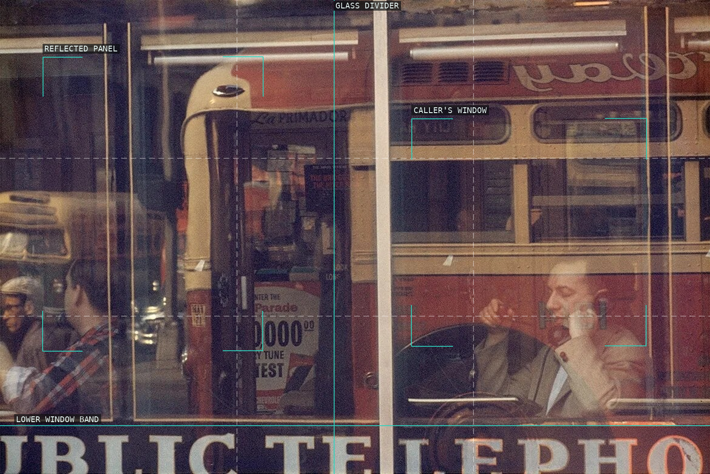

A passerby is held in a pale upper street while the red foreground screen opens a second, unstable reflection below.

The immense dark canopy makes the snowy street a compressed aperture, with the curb slipping diagonally through it.

The seat back and floorboards build a near-abstract structure; the cropped shoe breaks it with a human fragment.

Painted faces occupy the same reflected field as the architecture, delaying any clean distinction between mark and subject.

The glass surface becomes the primary drawing, keeping the distant figures behind a network of interruptions.

The taxi is read as layered red, yellow, and black fields before its driver and steering wheel resolve as a scene.

Three mirrors segment the street into competing reflections, making the red-coated figure appear only after the display is read.

Window bars and reflections partition the telephone gesture into a gridded urban tableau.

The bus window isolates a passenger while the red body and wheel arch turn the vehicle into a stack of graphic zones.

Condensation and snow reduce the street to a figure, a yellow field, and downward-running marks on the glass.

Dark boards withhold almost everything; the thin horizontal opening becomes a precise stage for cars and walkers.

A dark passing figure is slowed by translucent verticals, glass seams, and a pale lower reflection.